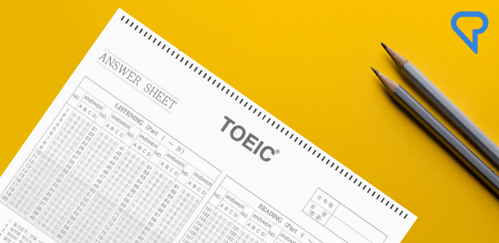

졸업요건
학교와 학과의 졸업 요건에 대해 명확하게 알려드립니다.
이수 학점, 영어 점수, 봉사 활동, 독후감 작성에 관해 안내해드립니다.
이수학점
학교 & 학과 규정
총 120학점 이상 이수(모두 학과 인정 과목/강좌에 한함)
학번 |
전공 과목 이수 요건 |
|---|---|
| 2013 | 70학점 이상(전필+전선) |
| 2014/15 | 84학점(전필) |
| 2016/17 | 68학점(전필) |
| 2018 | 전필 43학점 + 전선 36학점 |
교양 |
교양 과목 이수 요건 |
|---|---|
| 교양 필수 | 10~13학번: 16학점 14~17학번: 18학점 |
| 교양 선택 | 영역별 학과 지정 과목 중 선택(17학번 이후) |
교수님께 문의
영어
학교 규정

TOEIC 700점 이상
대체 인증: 학교 모의 TOEIC 및 대체 프로그램 수강/시험으로 대체 인증 가능
제출 장소: 국제 어학원 졸업 인증처
학과 규정
TOEIC 700점 이상
지정 영어문법책 연습문제 2000개 내외 문제풀이
Raymond Murphy, Grammar in Use Intermediate, 3rd Edition, Cambridge Univ.
Press, 2009. [개정 2016] 영문판
16학번 이전 학번은 Basic 버전
제출 시기: 4학년 1학기 기말고사 기간
제출 장소: 학과 사무실
봉사
학교 규정
 사회 봉사 과목 이수(15학번 이후)
사회 봉사 과목 이수(15학번 이후)
15학번: 32시간 이상 봉사
16학번 이후: 30시간 이상 봉사
학과 규정
노인 대상 봉사 10회 이상
전체 20시간 이상
노인 목욕 봉사 시 2시간 인정
SW 가치 확산 노인 봉사 포함
기초 컴퓨터 활용법
스마트폰 사용법 교육 등
인증 방법: 학과 양식 '봉사 활동 확인서' 제출
제출 시기: 4학년 1학기 기말고사 기간
제출 장소: 학과 사무실
독후감
학과 규정
독후감 40편 이상 각각에 대한 PPT(10~20 slides) 제출
학과 지정 도서 100권, 학교 권장 도서 100권 중 40권 이상
PPT 구성: 각 도서에 대해 다음 내용 포함
1.도서 선정 이유 및 대학 생활에 주는 메시지
2.나의 학과 전공 공부와 향후 진로에 미친 영향
3.우리 학과 학생들에게 추천하고 싶은 이유
4.본인이 생각하는 책의 핵심가치
5.본문 내용 요약 및 느낀 점
제출 시기: 4학년 1학기 기말고사 기간
제출 장소: 학과 사무실